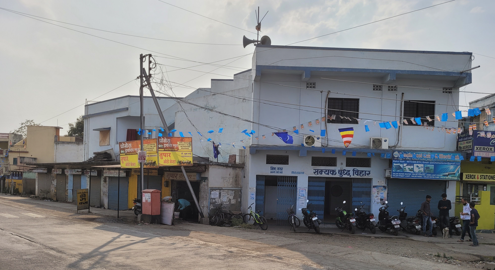
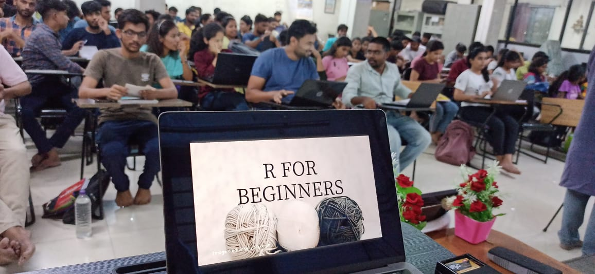

My dream or a 70k salary
Nalanda Academy
Data are important. But data without analysis and insights are of no use. From 2013, Nalanda Academy is teaching free to caste oppressed students in India. In April 2022, I joined Nalanda with a dream to teach free data science courses. Through this proposal, I seek funding for R data science courses at the Nalanda Academy, India.
About Nalanda Academy
Nalanda Academy was founded in 2013 by Anoop Kumar (Founder-Director) and two co-founders. It is a non-profit registered NGO (Non-Governmental Organisation) in India. We provide free education to marginalized students in India. We are located in a very small town - Wardha - of state Maharashtra in India. Our students come from different states of India. Most of our students are from rural areas with non-English medium education. We teach them the basic concepts of high school English, Social Science, Maths, and Science. We mentor them for higher education in India and abroad.
Our community members and alumni donate money for Nalanda Academy. Believing in our mission, local Wardha community gave us Samyak Buddha Vihar (see Figure 2) to conduct the classes. In last nine years, we educated around one thousand social science students and helped them to get admission in top Indian universities (like JNU, TISS, & APU). And, our twenty-three students are pursuing higher education in Canada, USA, and Australia.
My name is Ajay Kumar Koli, Head of School of Information & Data Science, Nalanda Academy. I’m a full-time R data science educator at Nalanda. I started using R during my PhD in Management Studies. In last two organisations, I taught R as a full-time Assistant Professor of Marketing Research and Research Methods.
In August 2021, I came to know about Nalanda Academy through Twitter . Then, I conducted eighteen hours of research methodology course (videos on YouTube) at Digital Nalanda - a platform of Nalanda Academy to conduct on-line sessions. I liked their model of free education to engage and empower underprivileged students in India. Gradually, I realized that data science courses are not accessible to students at the bottom of pyramid. Hence, I joined Nalanda Academy to teach free data science courses using R and RStudio and to make data science community more inclusive by taking it to the most deprived sections of Indian society.
My R Courses
In January 2020, I conducted my first R workshop at PIBM as part of a faculty development programme (see Figure 3). During the COVID, I started my own courses and developed a course “R for Beginners” (its website is R4Bee). It includes five modules: R & RStudio, Dynamic documents using R Markdown, Data visualisation using ggplot2, Data wrangling using dplyr and Slide-crafting using xaringan. As you can see on the R4Bee website, using my course I had trained a total of seventy four students in eight batches.
In January 2022, I conducted R workshop at Vishwakarma University for ten hours for eighteen participants (see Figure 5 and videos on YouTube). As usual, I shared my course slides on Twitter and it is my pleasure to share that on 12 September 2022, almost 64 thousand people saw my slides (see Figure 1).
In April 2022, my well-received slides and praise from the #RStats data science community gave me confidence to join Nalanda Academy full-time and teach free R data science courses. In the last five months, I taught:
R for Beginners, for eighteen hours (see Figure 6, GitHub link).
Basics of Statistics, for thirty two hours (GitHub link).
Research Methodology - thirty hours (see Figure 6, GitHub link).
Two of my colleagues took on-line sessions for:
We are in the process of developing more data science courses. Please see the latest status of our courses and educators on this Google Doc.
Data Science Educators
Right now only I’m teaching data science full-time at Nalanda Academy. But, we’ve a growing team of on-line data science educators at Nalanda. With their permission, I’m sharing their names and LinkedIN profiles with you:
Funding Requirements
As I mentioned, from nine years Nalanda Academy was largely teaching to the social science students. Now, we are building a School of Information and Data Science from the scratch. We require funding for two immediate tasks:
Laptops for R Training: My students come from a humble background. Most of them cannot afford to buy a laptop. In my last batch of students hardly 2-3 students got their own laptops. Still, they did not quit and attended all sessions. Nalanda Academy requires at least thirty laptops. In India, on an average a laptop will cost around 50,000 INR (630 USD). We need a funding of 20,000 USD to buy thirty laptops to conduct the data science course effectively.
Paid Internship: Within Nalanda Academy, we aim to build a School of Data Science which engages with the oppressed caste students in India and offer them free data science education. In near future, we also would like to offer paid internship to the students. Working on paid-projects will build their confidence without worrying much about their survival.
Nalanda Abhiyan Campus: We are extensively working to construct our own nine acre campus (400,000 Square foot) for three hundred students (150 girls and 150 boys). This is a Google Map location. Most probably the first phase of our campus construction will start from October 2022. Our team is working very hard to raise funds for the campus as well.
I would like to thanks the R-Consortium team for allowing us to submit this application. Please feel free to ask for my information.
All best wishes.
Yours sincerely,
| Contact | |
|---|---|
Dr. Ajay Kumar Koli Head, School of Data Science Nalanda Academy, Wardha - 442001 Maharashtra - India Contact number: +91 88868 10879 Email: ajayk.nalanda@gmail.com |
Anoop Kumar Director, Nalanda Academy Wardha - 442001 Maharashtra - India Contact number: +91 77679 90921 Email: anoopk.nalanda@gmail.com |
Appendices

